Explore Telč
A Brief History
Telč was transformed after 1550 when Renaissance nobleman Zacharias of Hradec rebuilt his water-surrounded chateau and ordered burgher houses with arcades around a triangular square following a fire. The uniform façades and ponds reflect Italianate planning on a Moravian crossroads between Vienna and Prague. Subsequent Habsburg and Czechoslovak rule left the town a county seat whose historic core survived with little modern intrusion, preserving one of Bohemia-Moravia's most intact Renaissance ensembles.
Attractions Map
Top Sights & Activities
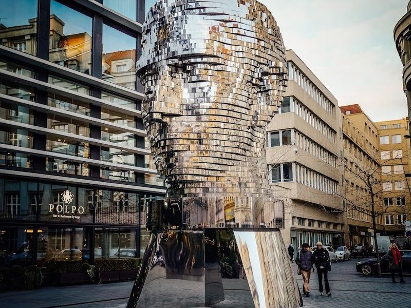
Franz Kafka - Rotating Head by David Cerny
In the heart of Prague, find the striking and modern sculpture known as "Franz Kafka - Rotating Head by David Cerny." This 11-meter-tall metallic head is a tribute to the influential author Franz Kafka, who was born in Prague. The sculpture consists of 42 rotating layers and is adorned with mirrored panels that create a captivating contrast against the surrounding buildings. Every hour, for about fifteen minutes, this impressive piece comes to life as its layers begin to rotate.
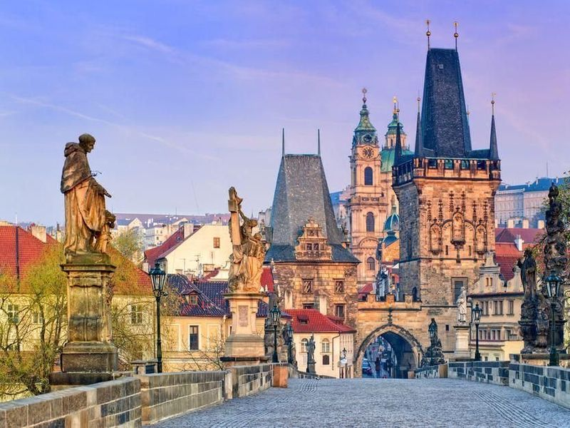
Charles Bridge
Charles Bridge stands as a landmark that connects Prague's Old Town and New Town, embodying the city's rich history and vibrant culture. Completed in 1390, this stone bridge has become a must-visit for travelers from around the globe. As you stroll across it, encounter lively street artists and vendors showcasing their crafts, creating an enchanting atmosphere filled with music and creativity.
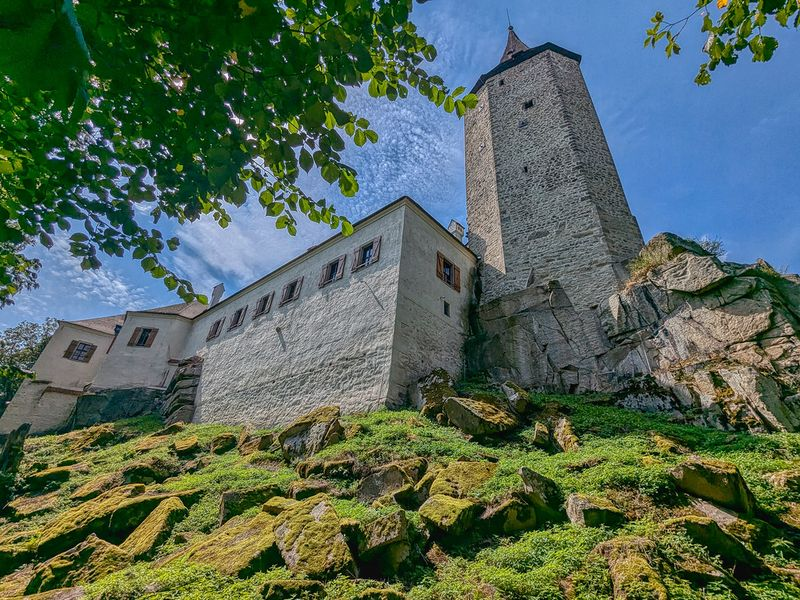
Old Town Bridge Tower
The Old Town Bridge Tower, a Gothic structure dating back to the 14th century, stands proudly at one end of the Charles Bridge. With its grand arched gateway and intricate ornamentation, it captures the essence of medieval architecture. While many travellers admire it from afar as they stroll across the bridge, few realize that this gem can be explored further.
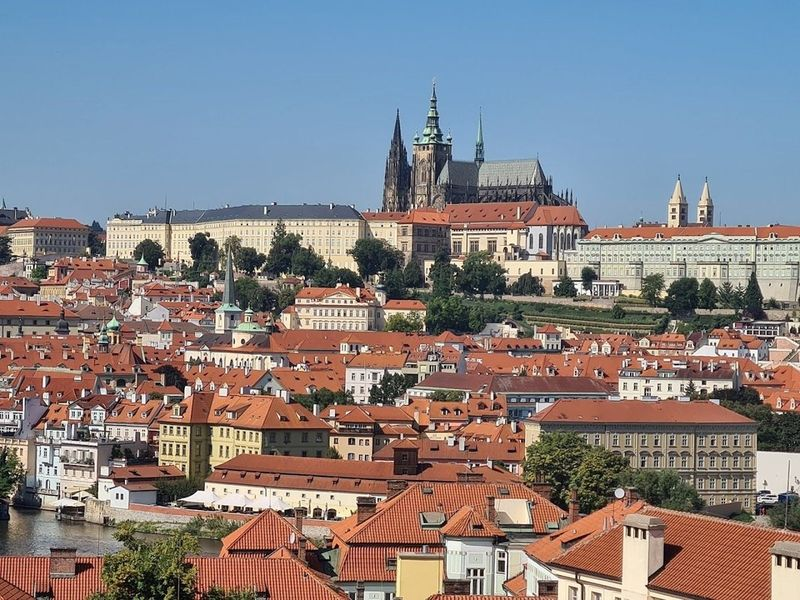
Klementinum
Klementinum is a historic complex located at the eastern end of the Charles Bridge, featuring the Mirror Chapel, Baroque Library, and an Astronomical Tower with an Atlas statue. Originally a Jesuit dormitory in the 16th century, it expanded to include a library, university, and scientific institutions. Guided tours showcase its opulent areas such as the Baroque library adorned with frescoes, Meridian Hall, and the Astronomical Tower offering city views.
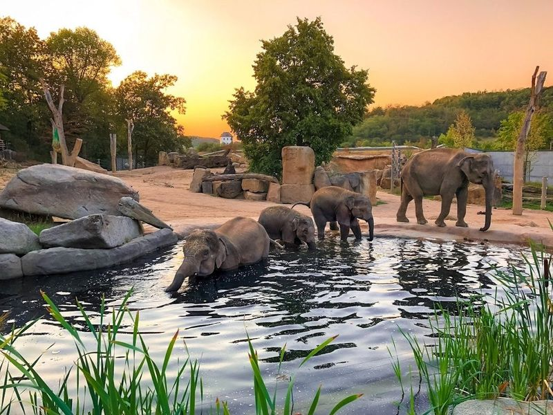
Prague Zoo
Prague Zoo, also known as Zoo Praha, is a renowned zoo founded in 1931 and located in the picturesque Drahan-Troja Nature Park. Spanning 58 hectares of hilly landscape, it is home to an impressive collection of nearly 700 species, making it zoological collections in Europe. The zoo's challenging setting has been utilized to its full potential, providing habitats for over 4000 animals representing over 600 species.
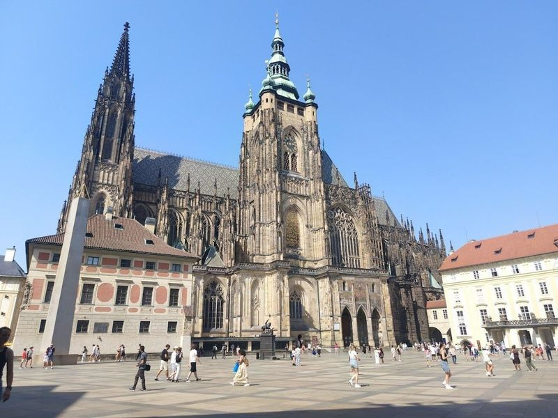
Prague Castle
Prague Castle is a sprawling complex that showcases a mix of architectural styles, from Romanesque to Gothic and even 20th-century designs. As the primary attraction in the Czech Republic, it holds significant historical and symbolic importance. Serving as the seat of Czech sovereigns since ancient times and later as the residence for Czech presidents, this expansive site includes various structures such as the Cathedral of saints Vit, Vaclav and Vojtech, noble palaces, a convent, and more.
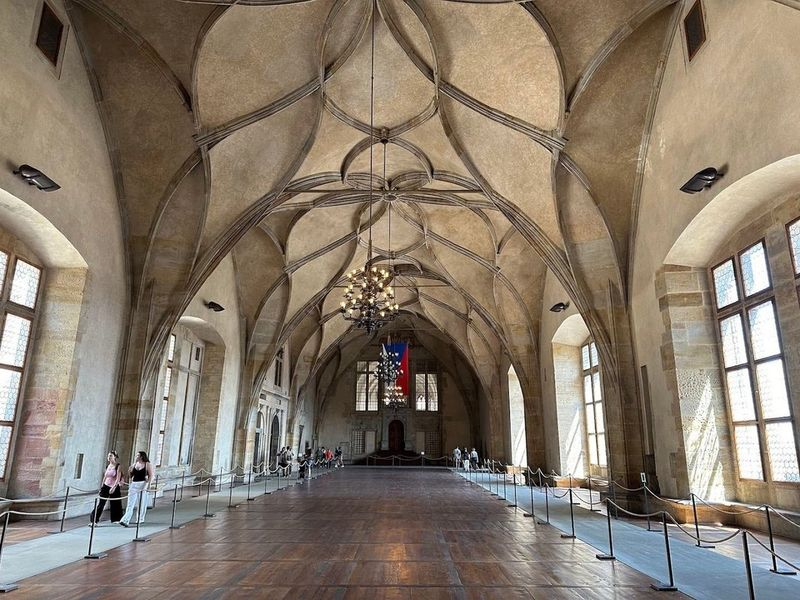
Old Royal Palace
The Old Royal Palace, located within Prague Castle, is a late Gothic palace with Renaissance elements. It features the impressive Vladislav Hall, where royal events were held. The palace has a rich history as the residence of Czech monarchs and Bohemian princes throughout the centuries. Its architectural transformation from a simple wooden building to encompassing various styles such as Gothic, Romanesque, Renaissance, and Baroque is truly remarkable.
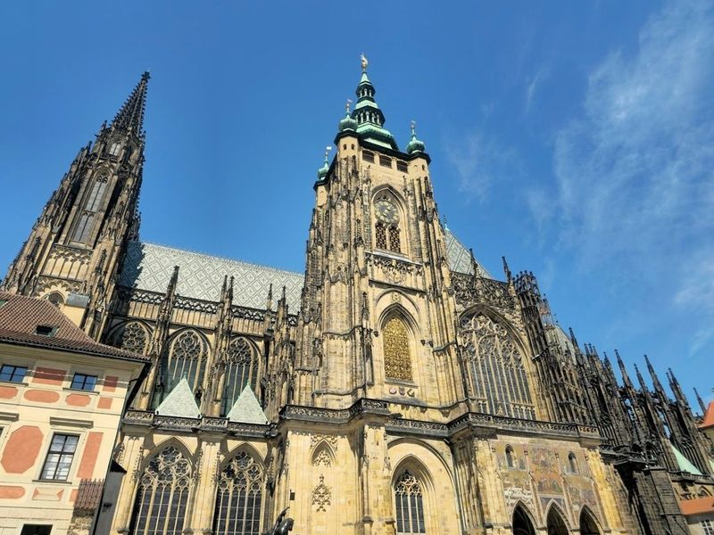
St. Vitus Cathedral
St. Vitus Cathedral is a Gothic masterpiece and a resting place for saints like Vitus, Wenceslas, and Adalbert. It's part of the Prague Castle district, a UNESCO World Heritage site with a mix of architectural styles. The cathedral features twin towers and houses the tomb of St. Wenceslas and the crown jewels. travellers can also admire gurning gargoyles and stained-glass windows, including one by artist Alfons Mucha.
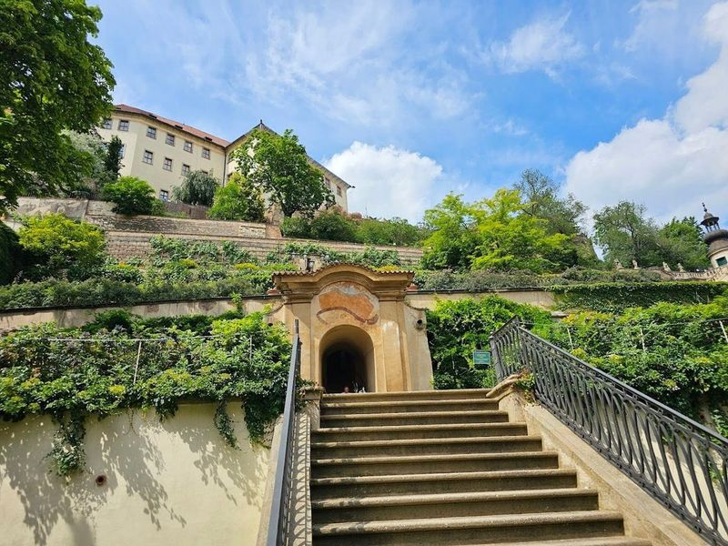
Gardens below Prague Castle
Nestled below Prague Castle, the Gardens offer a serene escape with their terraced layout and picturesque pavilion, providing views of the city. While exploring Prague Castle, travellers can catch glimpses of the gardens through the fortifications on the eastern end. The expansive complex includes five gardens and the Ledebour Gardens Gallery, making it a attraction in Prague.
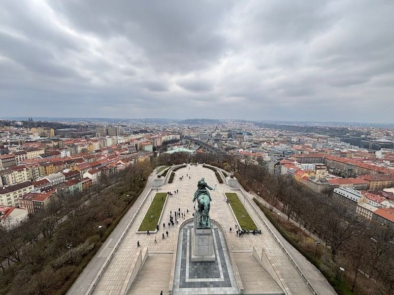
Vítkov
Vítkov Hill, located in Prague 3, offers a unique and view of the city. The hill is home to the National Memorial, which provides insight into Czechoslovakia's history and its role in World War I. travellers can explore interactive exhibitions inside the memorial. The hill also features a 1929 equestrian statue of Jan Zizka, offering an off-the-beaten-path adventure for travelers.
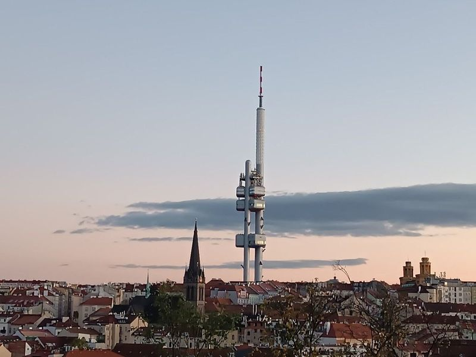
Žižkov Television Tower
The Žižkov Television Tower is an landmark in Prague, designed by Vaclav Aulicky and completed in 1992. Despite being considered one of the ugliest buildings globally, it remains a fascinating attraction due to its distinctiveness. The tower offers a viewing platform with 360-degree views, along with restaurants and a luxury hotel. Situated in the trendy Žižkov neighborhood, the sky-high restaurant and bar provide international cuisine and city views.
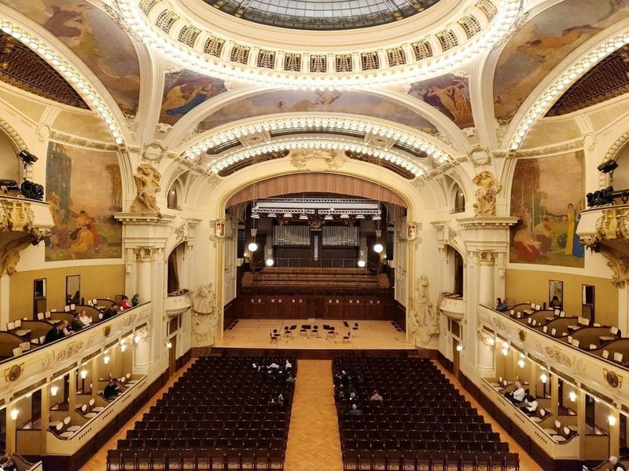
Municipal house
Obecní Dům, also known as Municipal House, is a art nouveau venue in the heart of Prague. This architectural gem took seven years to build and now stands as beautiful buildings in the Czech Republic. It boasts a 2,000-seat concert hall, salons, offices, and restaurants adorned with lavish decorative work. The venue hosts classical concerts, opera, ballet performances, and various events like fashion shows.
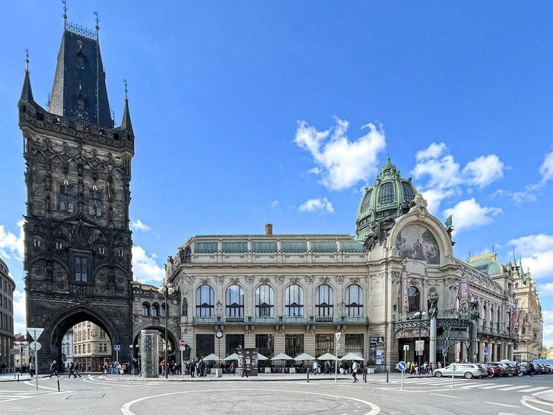
The Powder Tower
Prašná brána, also known as the Powder Tower, is a historic city gate in Prague that dates back to the 15th century. Originally built in the 11th century and later reconstructed, it served as one of the original entrances to Old Town Prague. During the 17th century, it was repurposed for storing gunpowder, hence its name.
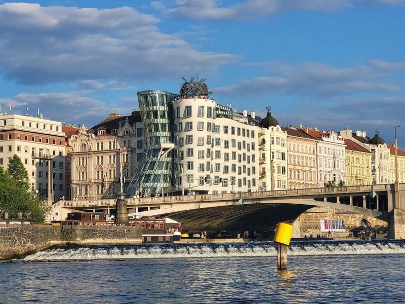
Dancing House
Dancing House, also known as Tancici dum, is a modern architectural marvel located in Prague. Designed by Czech architect Valdo Milunic and Canadian Frank Gehry, this unique building stands out amidst the city's centuries-old architectural styles. Resembling two dancers in motion, it features dynamic and static elements that give the impression of a female dancer swaying with her male partner.
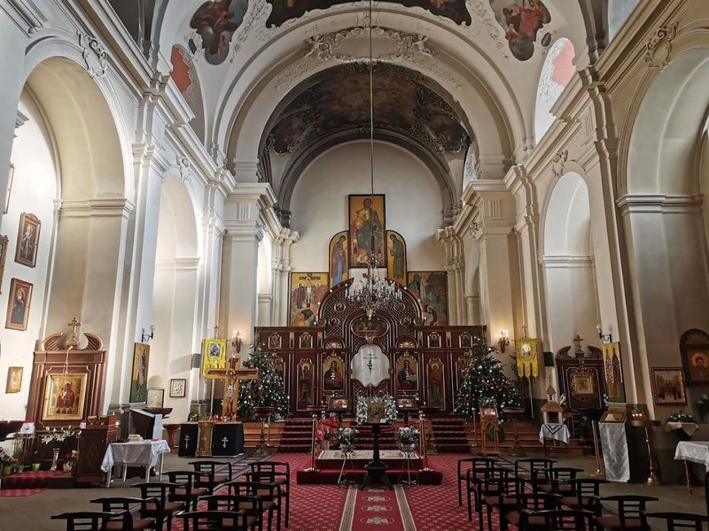
Orthodox Cathedral of Saints Cyril and Methodius
Ss. Cyril and Methodius Cathedral is a significant Orthodox church in the former Czechoslovakia, featuring a war resistance museum in its lower level. Located in Prague's New Town, amidst Art Nouveau and Revival Architecture, this Baroque Age architectural gem stands out. travellers can explore the eerie yet moving crypt and watch a film about the paratroopers and Heydrich's assassination.
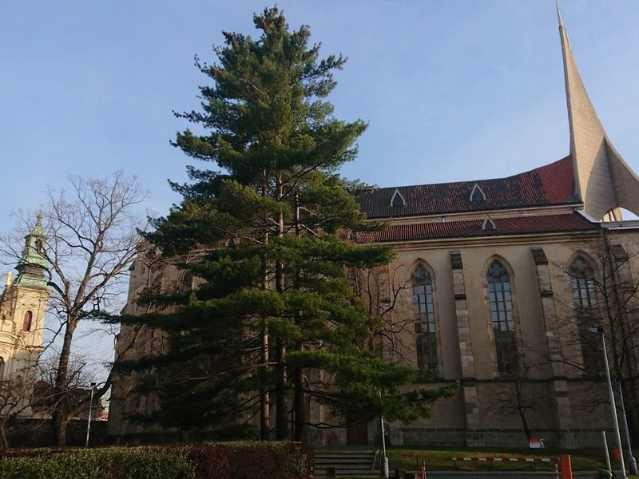
Emmaus Monastery
The Emmaus Monastery, located in the New Town of Prague, is a historic site dating back to the mid-14th century. The Gothic structure was founded by Charles IV and has seen centuries of peace, but it suffered damage during WWII due to Allied bombing. The monastery's main building reflects its medieval origins, while some adjacent structures were added during the Baroque period. Despite being damaged in the war, the monastery has been beautifully reconstructed with a modern new roof.
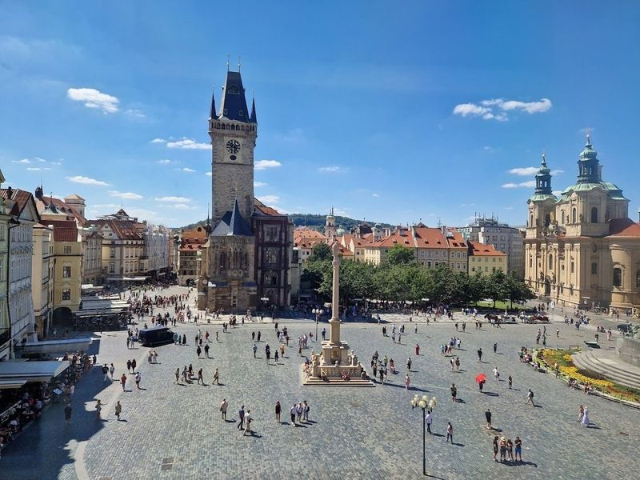
Old Town Square
Old Town Square, In Prague, is a historic and picturesque square with origins dating back to the 10th century. This UNESCO-listed site has retained its medieval charm and serves as a hub for travellers seeking to immerse themselves in the city's rich history and vibrant atmosphere. The square is adorned with an array of architectural marvels, including Gothic buildings like the Old Town Hall and the Prague Astronomical Clock.
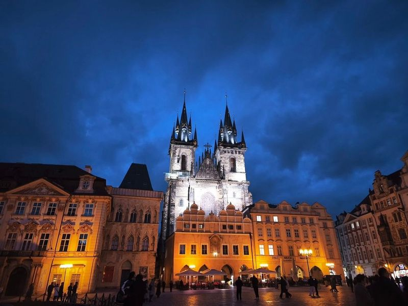
Church of Our Lady before Týn
The Church of Our Lady before Týn, also known as Týn Church, is a prominent 14th-century landmark in Prague. It features striking 80-meter-tall towers with ornate carvings and a baroque altarpiece. The church has undergone several alterations over the centuries due to changes in the city's allegiances.
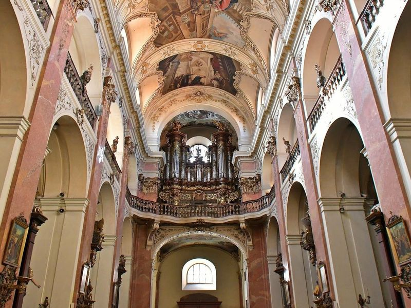
Basilica of St. James the Greater
The Basilica of St. James, also known as Bazilika Sv. Jakuba, may seem unassuming from the outside, but its interior is a display of baroque art and architecture. The long nave is adorned with gilded statues and paintings under a beautifully frescoed ceiling depicting stories of the Virgin Mary's life. One of its most revered treasures is the bejeweled Madonna Pietatis highlighted by blue light at the altar.
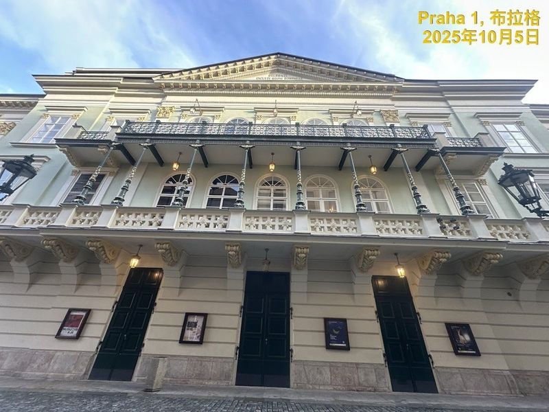
The Estates Theatre
The Estates Theatre, part of the National Theatre family, is an elegant and historic venue in Prague that has been running since 1783. It gained fame for hosting the world premiere of Mozart's Don Giovanni opera in 1787 and has continued to stage important Czech opera and drama productions.
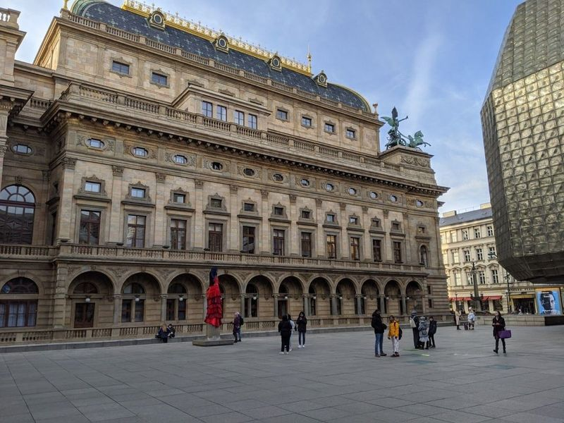
National Theatre
The National Theatre, also known as Narodni Divadlo in Czech, is a significant cultural institution in Prague. It holds a rich artistic tradition and is considered the Alma Mater of Czech Opera. The venue showcases nationally sponsored new and classical ballet, opera, and theater performances. Situated just a five-minute walk from the hotel, this historical late 19th-century building boasts magnificent interiors that are truly captivating.
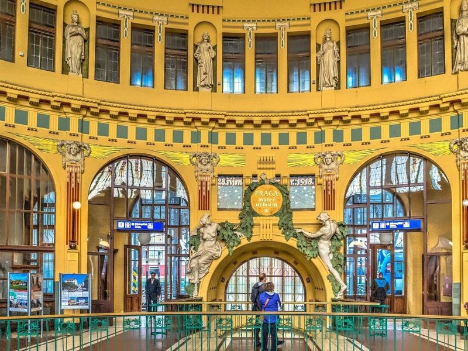
Prague Main Train Station
Prague Main Station, also known as Praha Hlavni nadrazi, is a centrally located and well-connected transportation hub that offers a convenient gateway to the captivating city of Prague. The station boasts impressive historic architecture alongside modern amenities such as shops, restaurants, and cafes.
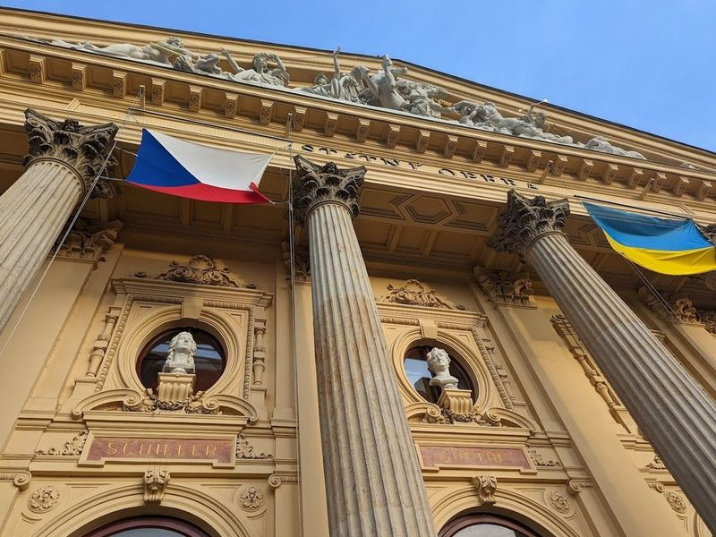
State Opera
The Prague State Opera, also known as the Former New German Theatre, is a historic and elegant venue with a rich cultural legacy. Built in 1888, it offers opera and ballet performances. Managed by the National Theatre, this neo-Renaissance building boasts a gilded stage and interior. Despite its unfortunate location across from a major highway, it remains one of Central Europe's most important music venues.
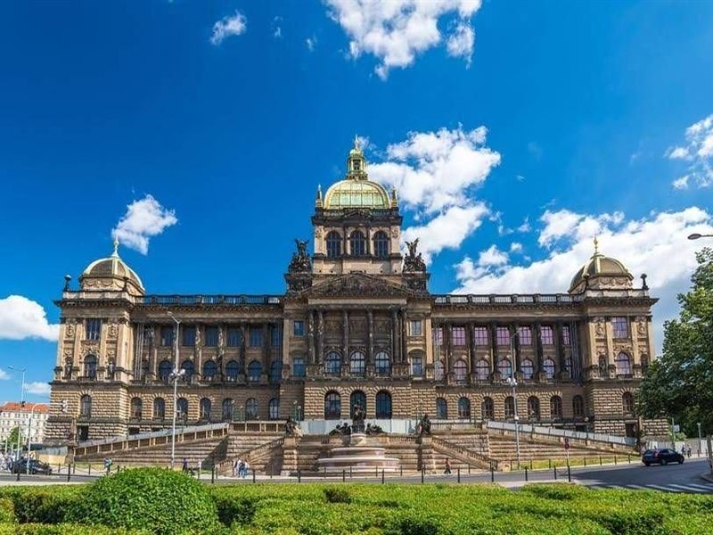
National Museum
Národní Muzeum, also known as the National Museum, is a grand institution established in 1818 with a diverse array of natural science and history exhibits. The museum's origins are tied to the contributions of Czech aristocrats and the pivotal role played by Count Kaspar Maria von Sternberg, a prominent Bohemian botanist. Housed in an impressive neo-Renaissance building at Wenceslas Square, it stands as a symbol of Czech national revival.
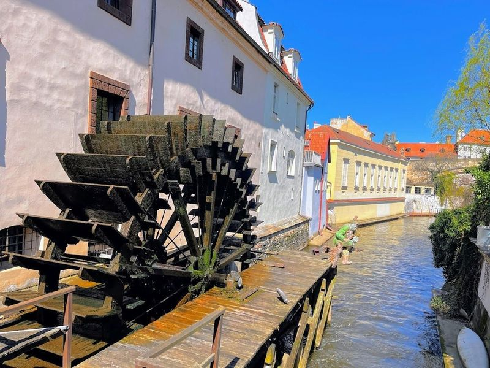
Lennon Wall
Nestled near the Charles Bridge, the Lennon Wall in Prague is a vibrant canvas that has become a symbol of peace and hope since the 1980s. Following John Lennon's tragic death, fans began to adorn this wall with colorful graffiti, heartfelt messages, and lyrics celebrating his legacy as a peace advocate. Despite attempts by authorities to erase these expressions during Czechoslovakia's communist era, the wall persisted as a testament to resilience and creativity.
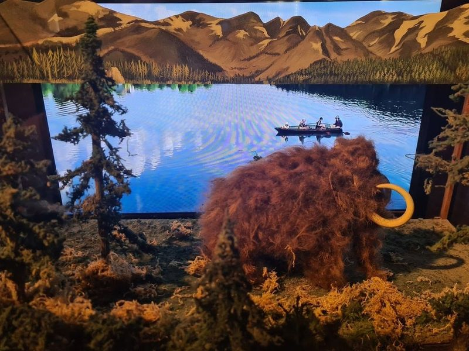
Karel Zeman Museum
The Karel Zeman Museum, located in Prague, Czech Republic, is an interactive and family-friendly exhibition showcasing the renowned work of Czech film director and animator Karel Zeman. The museum focuses on Zeman's pioneering use of special effects in his fantasy films from the 20th century. travellers can explore his famous movies such as 'Journey to the Prehistoric,' 'Invention of Destruction,' and 'Baron Prasil.'.
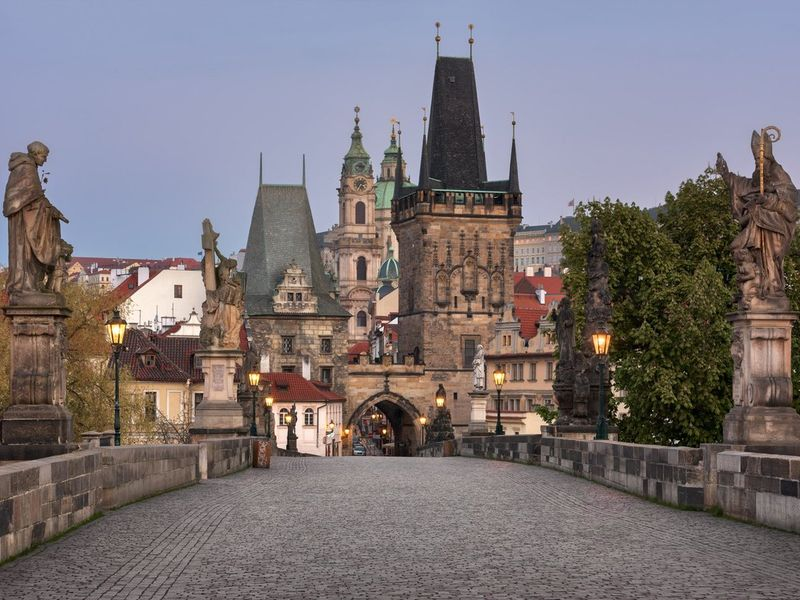
Lesser Town Bridge Tower
The Lesser Town Bridge Tower is a must-visit photo spot in Prague, located at the western end of the Charles Bridge. Offering views over the city, it connects to the lesser town and provides unique perspectives of the Charles Bridge, Mala Strana, Prague Castle, and St. Nicholas Church's dome. This tower was built in 1464 as an entrance gate to the Lesser Town and offers a less crowded but equally captivating experience compared to its counterpart, the Old Town Bridge Tower.
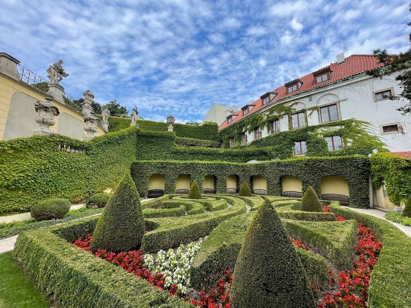
The Vrtba Garden
The Vrtba Garden, built between 1715 and 1720 in Italian baroque style, is a picturesque terraced garden adorned with sculptures and a pool. Nestled in Prague's Lesser Quarter, this UNESCO-listed gem designed by Frantisek Maximilian Kanka offers views of the surrounding landscape.
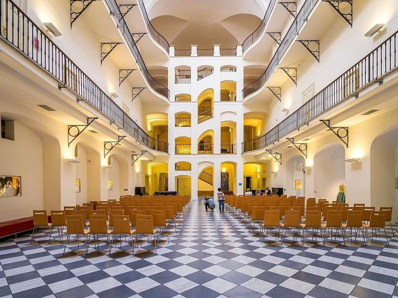
Czech Museum of Music
Nestled within the Baroque Church of Santa Maria Magdalena, the Czech Museum of Music is a treasure trove for music enthusiasts. This remarkable museum showcases an extensive array of musical instruments crafted by both Czech and international artisans, alongside fascinating manuscripts and interactive displays that highlight the rich musical heritage of the Czech Republic.
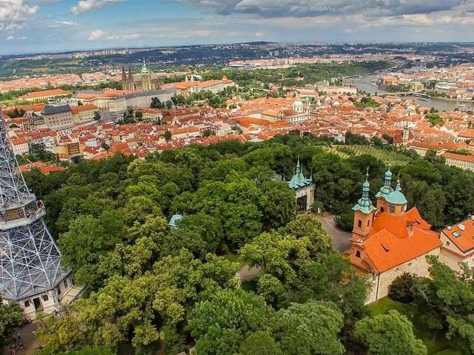
Petrin Tower
Petrin Tower is a famous landmark in Prague, offering a panoramic view of the city and its skyline. It resembles the Eiffel Tower and is located on Petrin Hill. travellers can enjoy a funicular ride to reach the tower and then climb 299 wooden steps to reach the top. From there, they can admire majestic sights such as Charles Bridge, the Dancing House, and Prague Castle.
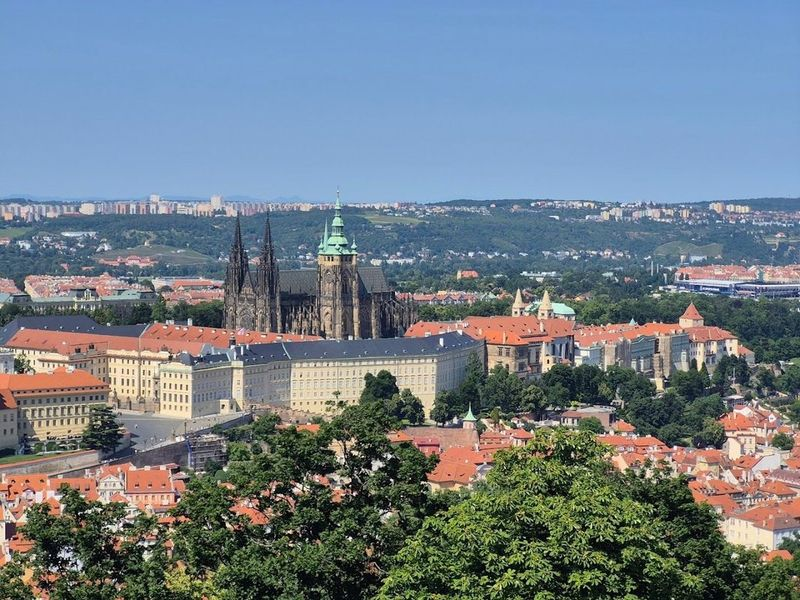
Petrin Hill
Petrin Hill in Prague is a picturesque hillside park known for its Petrin Lookout Tower, resembling the Eiffel Tower, and the funicular. While walking around the hill is free, there's an entrance fee for the tower and funicular ride. The area offers beautiful views of the city, woodland walkways, rose gardens, and historic sites like the Hunger Wall.
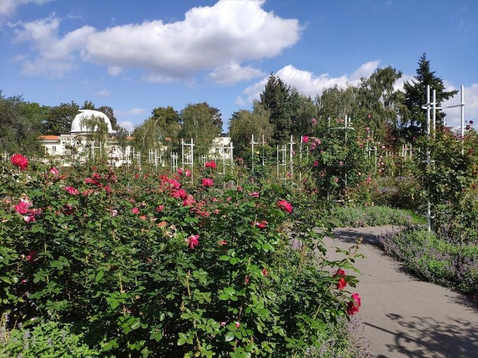
Petřín Gardens
Petřín Gardens, located on the slope of Petřín Hill in Prague, offer a delightful escape with its extensive grounds that stretch across several districts. travellers can enjoy romantic walks amidst blooming fruit trees and over 7,800 roses in the Rose Orchard and Kvetnice Garden. The gardens also feature attractions such as the funicular railway, Petřín Lookout Tower, Saint Lawrence Church, and a charming Mirror Maze.
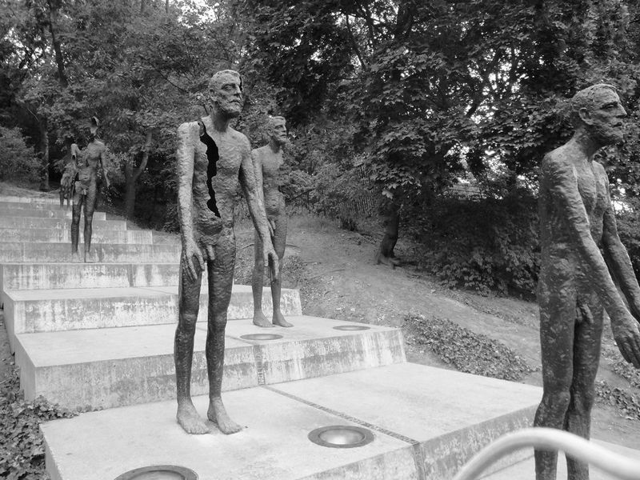
Memorial to the Victims of Communism
The Memorial to the Victims of Communism in Prague features a series of 7 bronze statues that symbolize the political prisoners who suffered during the Communist era in Czechoslovakia from 1948 to 1989. Situated at the base of Petrin hill on Ujezd street, this controversial and striking memorial was unveiled in 2002, designed by Czech sculptor Olbram Zoubek and architects Jan Kerel and Zdenek Holzel.
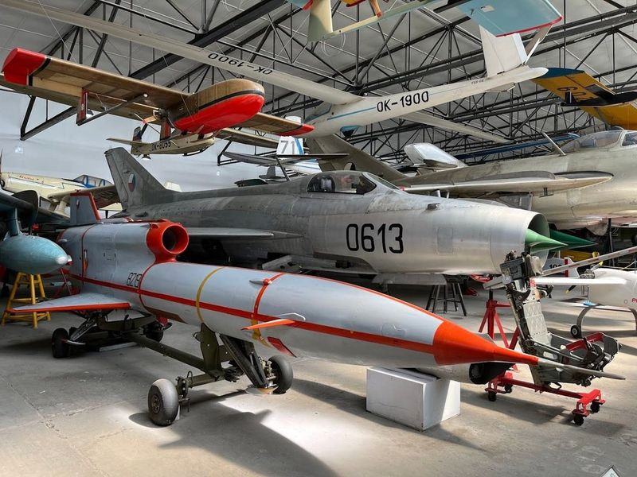
Aircraft museum Prague-Kbely
The Aircraft Museum Prague-Kbely, located on a historic airfield, is a vast indoor and outdoor museum boasting an extensive collection of aircraft. It is the largest aviation museum in the Czech Republic and one of the biggest in Europe, featuring 275 planes across four buildings.
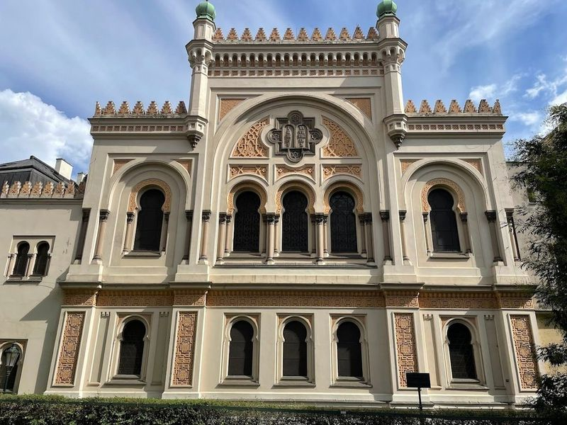
Spanish Synagogue
Located in Prague's Jewish Quarter, the Spanish Synagogue is a Moorish-style place of worship that now serves as a venue for exhibits and concerts. Despite being one of the newer synagogues in Prague, it was actually completed in 1868 on the site of a 12th-century synagogue. The interior boasts opulent golden decor and hosts permanent exhibitions on Jewish history in Bohemian lands and silver artifacts.
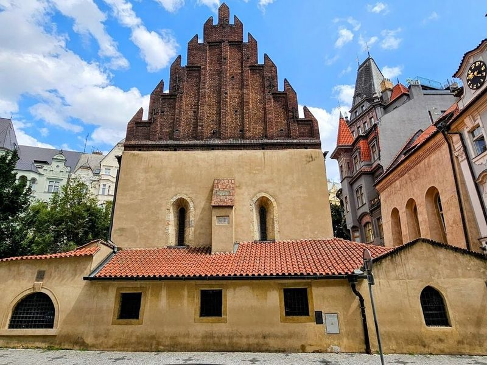
The Old-New Synagogue
The Old-New Synagogue, located in Prague's Jewish Quarter, is a example of Gothic architecture and holds the title of being the oldest surviving synagogue in Europe. Steeped in history and surrounded by legends, it is believed to be the legendary home of the Golem of Prague, a creature created to protect the city's Jewish population.
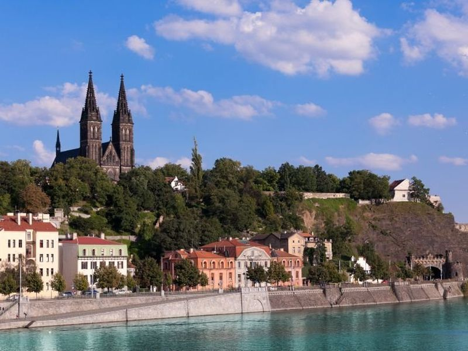
Vyšehrad
Vyšehrad is a historical fortress complex situated on a hill overlooking the Vltava River, offering a peaceful oasis with views of Prague. travellers can explore the medieval walls, visit the Basilica of St. Peter and Paul, and stroll through Vyšehrad Park to enjoy its unique atmosphere. The local cemetery is the final resting place of renowned Czech personalities. According to legend, Vyšehrad was the first seat of Czech kings, adding to its historical allure.
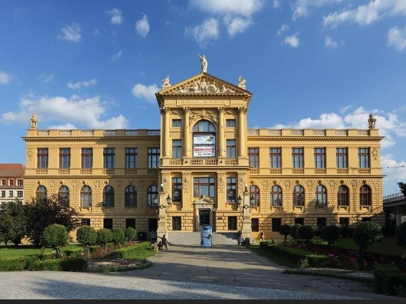
Museum of Prague
The City of Prague Museum offers a captivating journey through the history of Prague, spanning from prehistoric times to the 20th century. Housed in a magnificent neo-Renaissance building, the museum showcases archaeological collections and permanent exhibitions that highlight various periods such as the Middle Ages and the Baroque era.
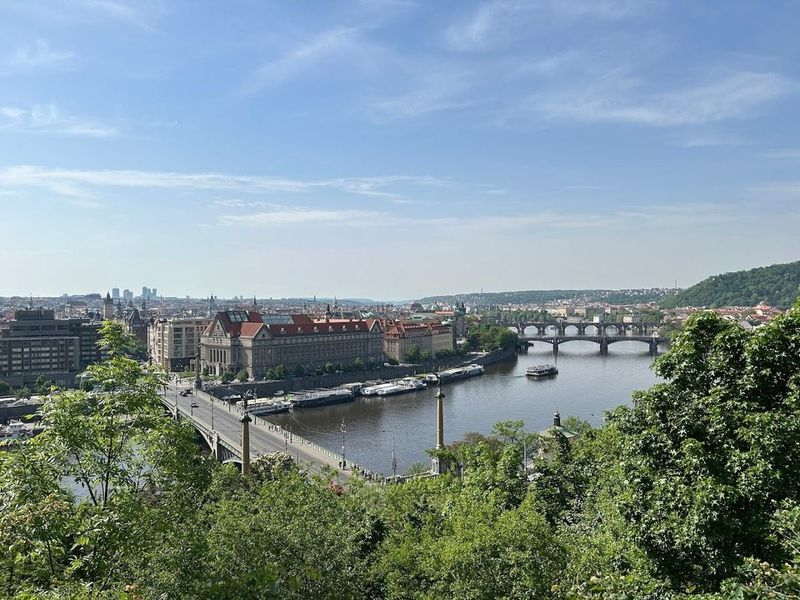
Letna Park
Letna Park, located in Prague, offers panoramic views of the city and is a popular spot for both locals and tourists. The park features a Baroque-styled pavilion, children's play areas, and the giant metronome at the top of the hill. travellers can enjoy picnics, leisurely strolls in nature, and taking in impressive views of the Vltava River and Prague's landmarks.
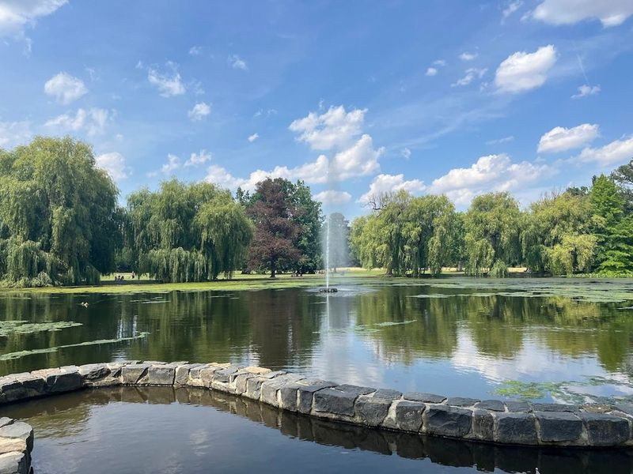
Královská obora Stromovka
Královská obora Stromovka is a sprawling park with a rich history dating back to the 13th century when it served as a royal hunting ground. Despite being heavily damaged by the 2002 Prague flood, this park has been restored and now offers playgrounds, picnic areas, jogging paths, ponds, fields, and plenty of shade trees. The park's name "Stromovka" translates to "tree place," reflecting the abundance of trees within its grounds.